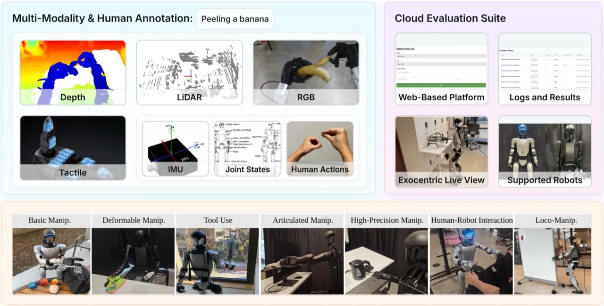
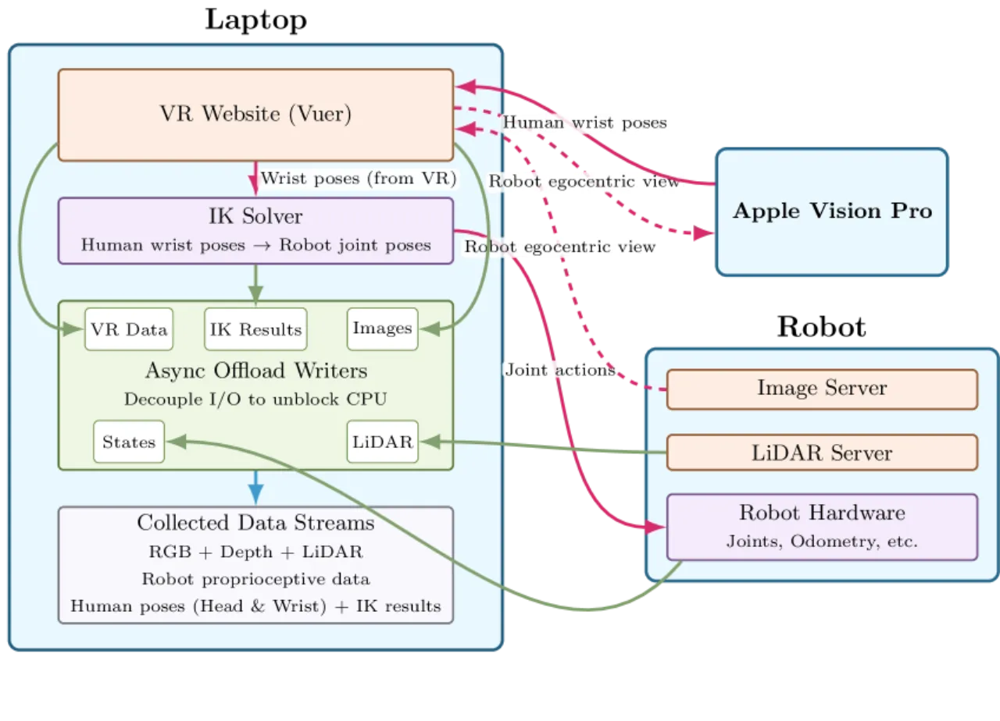
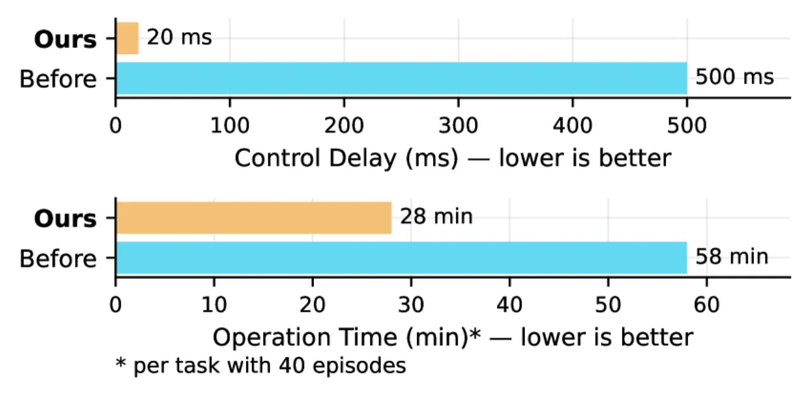
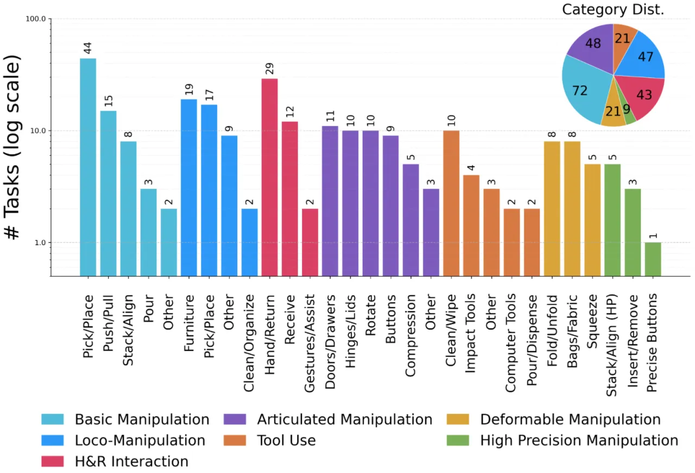
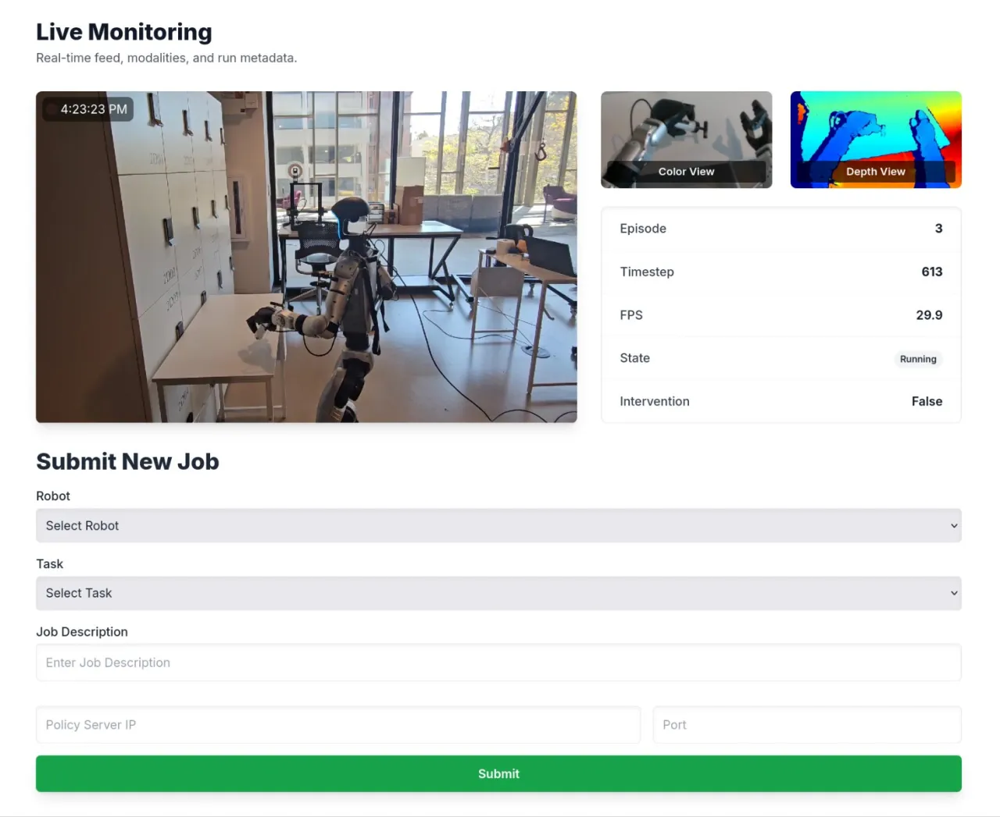
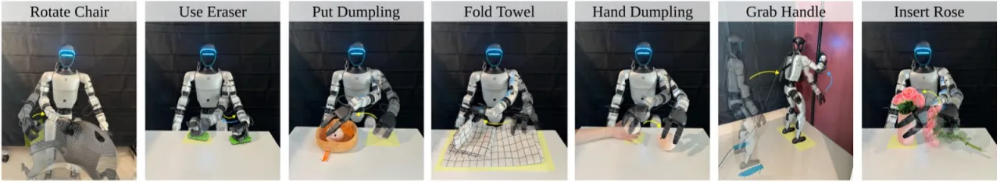
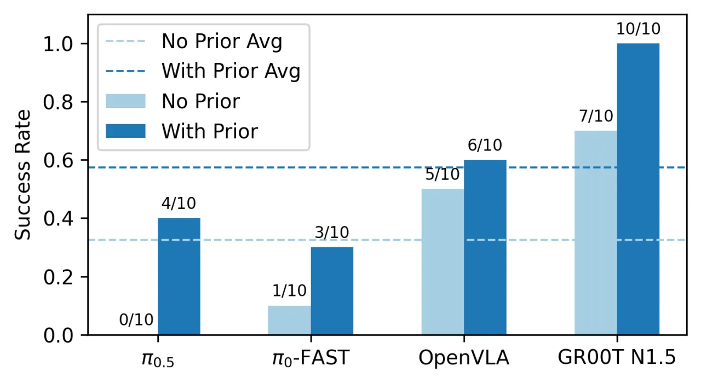

Humanoid Everyday 是目前最大规模的类人机器人操作数据集之一，覆盖 260 个任务、7 大类别，采集自真实世界中的多模态传感器（RGB、深度、LiDAR、触觉），并附带自然语言标注与云端策略评测平台，旨在推动通用人形机器人能力的研究。
通用人形机器人的进步依赖于大规模、多样化的数据，而现有数据集存在明显短板：任务种类少、传感器模态单一、缺乏标准化评测手段。Humanoid Everyday 旨在从根本上弥补这些缺口。
"现有机器人操作数据集往往局限于桌面操作场景，且大多基于非人形平台，难以捕捉类人机器人在真实世界中面临的高自由度、多任务挑战……我们提出 Humanoid Everyday——一个大规模、多模态的人形机器人操作数据集，覆盖 dextrous object manipulation、human-humanoid interaction 与 locomotion-integrated actions。"

数据集的核心是一套高效的采集系统：基于 Apple Vision Pro 的遥控接口 + 异步多进程流水线，搭载 Unitree G1/H1 两款人形机器人，以 30Hz 频率同步采集多模态传感数据。
操作员佩戴 Apple Vision Pro，利用其底部摄像头实时捕捉手腕与手指关键点；手指动作经由 dex-retargeting 系统映射到机器人灵巧手，手腕姿态则经基于 Pinocchio 的逆运动学算法（IK）转化为关节控制指令。


"Our pipeline halves data collection time compared to the official Unitree teleoperation system, while the control delay decreases from 500 ms to 2 ms."


在 7 类任务的代表性子集上，对 7 种主流 imitation learning 策略进行系统评测，每种策略每个任务执行 10 次试验，成功率（success rate）为核心指标。

| 策略 / Method | Articulate | Tool Use | Basic | Deformable | HRI | Loco-Manip | High Prec. | 平均 |
|---|---|---|---|---|---|---|---|---|
| Diffusion Policy | 100% | 0% | 30% | 0% | 40% | 30% | 0% | 29% |
| DP3 | 90% | 70% | 20% | 20% | 40% | 0% | 0% | 34% |
| ACT | 100% | 0% | 70% | 0% | 70% | 0% | 0% | 34% |
| OpenVLA | 70% | 30% | 30% | 40% | 60% | 30% | 10% | 39% |
| π₀-FAST | 100% | 40% | 60% | 20% | 30% | 10% | 0% | 37% |
| π₀.₅ | 100% | 40% | 30% | 40% | 40% | 0% | 0% | 36% |
| GR00T N1.5 | 100% | 0% | 80% | 50% | 100% | 30% | 0% | 51% |
GR00T N1.5 在平均成功率上以 51% 领先所有方法，尤其在 Articulated Manipulation 和 Human-Robot Interaction 任务上达到满分（100%）。High-Precision Manipulation 类别对所有策略均构成极高挑战，几乎所有方法均为 0%。

两阶段 fine-tuning（先在 Humanoid Everyday 预训练，再迁移到目标任务）优于直接 fine-tuning，验证了本数据集作为通用 humanoid prior 的价值。
"all the end-to-end imitation policies struggle in humanoid manipulation tasks due to the high-dimensional action space in our dataset"——类人机器人 28 DoFs 的动作空间远超桌面机器人，现有策略架构尚未充分适配。
在机器人需要移动的 Loco-Manipulation 任务中，点云帧间变化剧烈，3D 输入的可靠性低于 RGB 图像，DP3 等依赖点云的方法在该类任务成功率为 0%。
"nearly all policies achieve a 0% success rate" on high-precision tasks——现有模型缺乏 fine-grained visuospatial perception，无法完成如"将玫瑰插入花瓶"等精密操作。
"OpenVLA does not compress the action space and thus when trained on high-frequency 30 Hz data, it often fails to produce meaningful motions"——不压缩动作空间的 VLA 方法对高频率数据适应性不足。
"our cloud-based evaluation system does not yet support automatic scene resetting, as current imitation learning policies are not sufficiently robust for humanoids to recover the environments without human assistance"——每次评测后场景仍需人工重置。
现有评测仅覆盖已有 imitation learning 架构，"their performance degrades on more challenging tasks due to the high dimensionality of humanoid action spaces, indicating the need for more specialized model designs"。